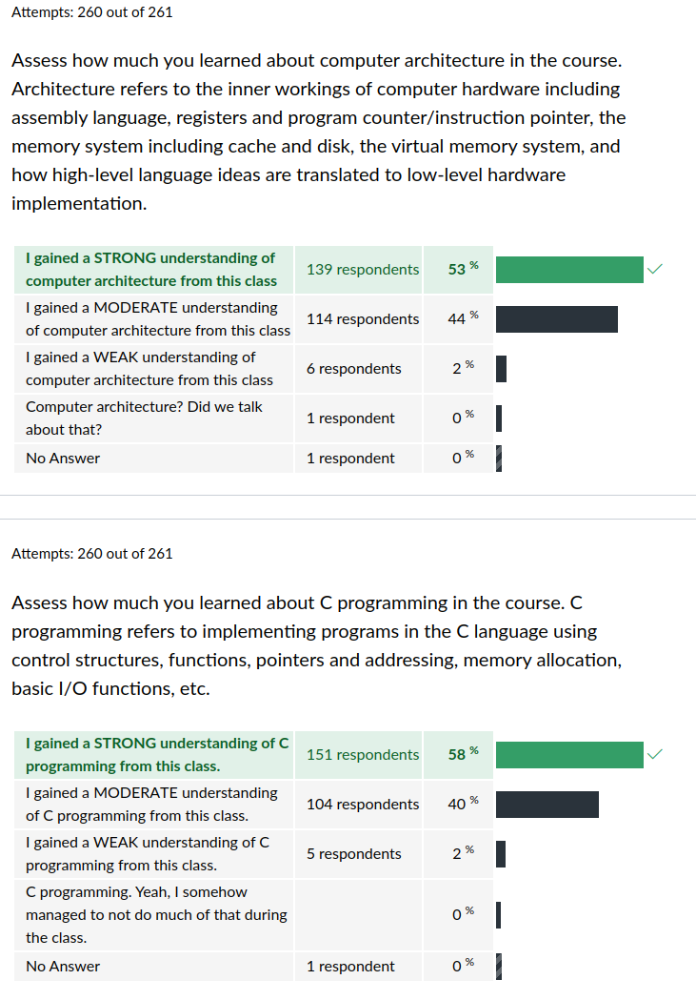
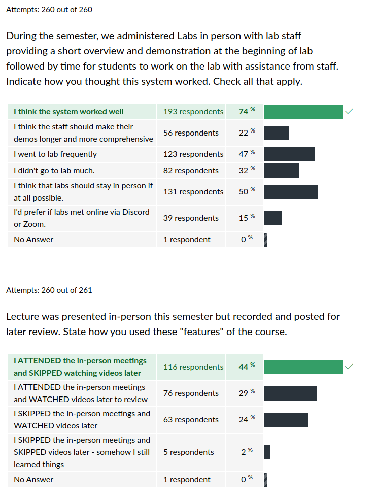

CSCI 2021 Exit Survey Results
Table of Contents
Summary Statistics for Multiple Choice Questions






Freeform Feedback
Frequent Items in Freeform Feedback
| Count | Comment |
|---|---|
| Overall | |
| 19 | Awesome semester / enjoyed the class / learned a lot |
| 2 | Was intimidated by this class but it turned out fine |
| 2 | Pacing was good |
| 4 | Pacing was too fast (especially late in the semester) |
| Exams | |
| 6 | Appreciated Practice Exams |
| 2 | Not enough time on exams |
| 1 | More space two write answers please |
| Projects | |
| 3 | Projects should be worth more credit |
| 3 | Projects due before exams please |
| 1 | Projects due after exams was nice |
| 4 | Too many projects / too high of difficulty |
| Labs/HWs | |
| Lecture | |
| 5 | Enjoyed energy / humor / rants during lecture |
| 5 | Would like to see running tally of bonus Engagement Points |
| 2 | Found it difficult to answer in-class exercises for EPs |
| Other | |
| 1 | Room was too cramped for comfort |
Props to Staff Members
A number of staff members were individually thanked by students in their free-form feedback for help during the semester.
| Thank-yous | Staff Member |
|---|---|
| 1 | Yang |
| 1 | Zixing |
| Ambrose | |
| 4 | Aniket |
| Dat | |
| 1 | Erin |
| 3 | John |
| 6 | Joon |
| Ngan | |
| 2 | Swati |
| 11 | All TAs |
Notable Freeform Responses
Student comments are given in plain face.
Instructor responses are italicized.
Lectures
- And Kauffman talks too fast. It's really tough for international students to catch up like me. So we can't go to in-person classes and have to watch videos at home with subtitles.
- One of the most helpful and engaging aspect was also frequent the small exercises during lecture!
- Kauffman's mini rants during lecture and his engagement with the audience made lecture more enjoyable.
Office Hours
- Office hours from TAs didn't seem incredibly helpful.
- Oftentimes, [TAs] stayed in their office hours for longer than necessary to help us finish.
- The [TAs] I met during office hours were all very approachable and knew the content very well.
Experiences always vary but it seems the combination of mostly Discord office hours plus some in-person office hours worked reasonably well.
Projects
- First project seemed very long and difficult but all the others went a lot smoother.
- Project 3 drove me close to insanity but it was a good project
- I think that project 3 was one of the easier projects since there was so much material and help available for the project. I found projects 4 and 5 much harder since not much was talked about them during class and it felt like we were more on our own.
Everyone has favorites and most-hated projects. Thanks for the feedback.
- The projects took a long time to finish which was fine (it forced me to learn hard topics).
- The projects abstract a lot on the ideas learned in class and sometimes it is terribly time consuming to find the connections to figure the problem out.
- Projects seemed all over the place in difficulty, wasnt a huge fan of that.
- I really liked the projects; they were just the right difficulty and I felt like I learned a lot from them.
Folks had varying responses to the difficulty of projects but there was a strong signal that folks learned a lot from doing them (see bar graphs above).
- I think the projects should definitely be before the exam, because they help with understanding the material on the exam.
- Having projects be due before the exams would certainly have helped keeping my lazy self in check and force me to prepare better for the exams
While there was some mixed opinion from students, the course staff were of the opinion that having projects due prior to exams would be force students to be more prepared for the exams. We will be adjusting schedules for this in the future.
- Wish the project instructions were more clear and organized.
- Project write-ups were very detailed which helped a lot.
Students vary quite a bit on how the perceive the project write-ups. If I could only find a way to ensure everyone actually READS the write-ups, I might have better sense of how to improve them.
Labs / HW
- Offer a lab section online (maybe just stream it to Discord from the Keller computer lab) so people can still attend Lab at home if they're sick, without being forced to find time to go to office hours.
We'll consider this, but it is logistically difficult to do. About 23% of the class indicated they would like an online Lab option so there is some motivation for us to try this, but we'd need to overcome some technical hurdles to make it possible.
Miscellaneous
- I wasn't confident with my programming skills before this course, and now I feel like I made a lot of progress.
Glad to hear that the course helped you gain confidence and improve your skills.
- This course is one of the most difficult courses at the top 10 Minnesota universities, if you use Google you can find out.
I just Googled "hardest classes at UMN" and found a top-10 list by a random person who hasn't taken most of the classes on the list. CSCI 2021 was #4 but it seems the only thing the author of the list did was read the course description. #5 is Calc II which I would not pitch as the epitome of difficulty. The list was created in 2017 about the time I joined the UMN so perhaps an update would be in order. I have a hard time believing a class in which 75% of students get a B- or better could be considered among the most difficult, but then again I'm getting old and am perhaps out of touch with the expectations of the younger generation.
- Came in to class hearing that it was one of the hardest classes in the University and it was not as intimidating as it was when taking it.
Glad to defy the reputation.
- The room was a little small sometimes, especially during tests
Agreed. Not my ideal setting but that's unfortunately out of my control.
- I don't think there's much that could be done about this but having the professor talk with a mask on made it difficult to understand sometimes.
Get vaccinated, boosted, and socially distance; badger your friends and family to do the same. Someday, this will get us back to a mask-free, in-person meeting. Thanks for your patience until then.
One-upmanship
- Dr. Kauffman talks at a great speed.
- Kauffman talks too fast for 1.5x lecture rewatching!
- Prof Kauffman does talk too fast for 1.5x speed. For future students, I recommend 1.25x speed.
- I still watched the lectures at 1.5x and somehow managed to understand? I think I'm just built different..
- Kauffman doesn't speak too fast on 1.5 speed
- I watched lectures at 1.75x with CC on.
- I still watch the videos at 2.0x.
The Far Side
- Assembly is garbage and i hate it thank you.
You're welcome. I heard back from Assembly about that and it replied…